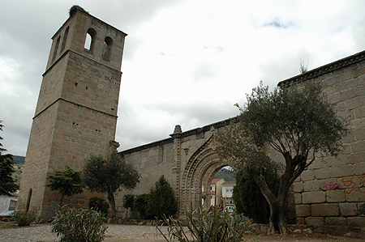

| MONUMENTOS | |||||||
|
|||||||
| LUGARES DE INTERÉS | |||||||
|
Poco se puede escribir sobre éste monumento. Apenas hay datos ni documentos hasta el año de 1480 en que aparece uno firmado por los Reyes Católicos, y que se refiere a la Iglesia de Santiago de Cebreros, así como otros posteriores que se guardan en los archivos del obispado de Ávila del 1506, 1546 y 1547 en los cuales se nombra a la Iglesia de Santiago de Cebreros. Se supone que se refiere a esta Iglesia Vieja y que ese fue su nombre hasta que se construyó la Iglesia nueva de Santiago Apóstol y dejó de funcionar la Iglesia Vieja como parroquia. Las ruinas que se conservan están situadas dentro del casco urbano.La iglesia puede ser que se construyera en esta zona aprovechando la atalaya que existía en ese lugar el norte del pueblo que servía para vigilar las incursiones sarracenas; como ocurrió cuando pasó Tariq por Cebreros en el año 711. D. Pascual Madoz situa esta atalaya en lo alto del Castrejón. Podría venir a confirmarlo un camino que sube al Castrejón y al cual se le conoce con el nombre de subida al castillo. La antigua atalaya sería los dos primeros cuerpos de la torre con dos puertas, que parece que han sufrido alguna modificación. El campanario sería añadido después constando de siete ventanas con arcos de medio punto. Describiendo la iglesia ésta consta de tres naves y tres ábsides con cuatro arcos semicirculares que la dividen, decoradas con bolas de estilo gótico isabelino. La portada principal tiene unas arquivoltas decoradas con bolas y un escudo que perteneció al Obispo de Ávila D. Francisco Sánchez de la Fuente (obispo desde 1492 a 1496). La fachada principal orientada al sur está formada por dos pilastras, rematadas por pináculos, entre las que se encuentra un arco de medio punto montado por tres arquivoltas, decoradas con bolas más una cuarta adornada con flores, todo esto lo remata una cornisa con medias bolas, pudiéndose ver dos ménsulas. Esta fachada tiene dos ventanas que por su forma serían saeteras originariamente. Lo que a mi parecer es un poco raro es que si Cebreros fue un pueblo importante en la antigüedad como así lo demuestra su lugar estratégico de paso de una meseta a otra, el que por allí pasase una calzada prerromana, que se encuentre la cañada Real que pasa de Toledo a Valladolid conocida como cañada Leonesa, y que Cebreros no dispusiera de un templo anterior a esta iglesia para el culto de sus moradores cristianos hasta el siglo XV. ¿ Es que estas tierras no fueron habitadas por cristianos hasta la época de la Reconquista en que se repobló esta zona? ¿Sus habitantes serían moros o serían judíos? Lo que sí podemos afirmar que Cebreros fue una de las juderías más importantes de España aunque no queden vestigios de ello. El rabino Rabí Meyr Melamed era de Cebreros y existió una antigua torre al parecer llamada “Torre de la iglesia mora”. Lamentablemente fue derribada hace unos pocos años para construir en su lugar una casa. Nos podemos preguntar si existió una iglesia pequeñita en el centro del pueblo y sobre la cual se construyo la actual iglesia de Santiago Apóstol y lo único que hubiese quedado de ella sería el frontispicio hoy situado en la entrada de la sacristía que observándole parece corresponder a otra época diferente al siglo XVI. Existen documentos en los que se menciona las Capellanías fundadas en la “Iglesia del Señor Santiago de lugar de Zebreros” en fecha 24 de abril de 1547 por D. Diego Ruiz de Sepúlveda. En 1655 cambiando el nombre de Santiago por el de Iglesia Vieja; hay datos de otra capellanía a nombre de Alonso Díaz Dávila. En el ábside lateral izquierdo existía una Capilla que en un principio se creyó que podía ser la sacristía, ésta era la Capilla de Nuestra Señora de los Dolores. D. Juan de Villalba, Comisario político del Santo Oficio de la Inquisición de Toledo y Vicario de la iglesia de Santiago Apóstol de Cebreros, dejó fundada una capellanía en el año 1687 para que dijesen misa los lunes, viernes y sábados de cada semana en la iglesia, conocida como La Iglesia Vieja. Las tropas francesas la utilizaron para encerrar ganado y como fuerte en 1812. Los franciscanos del convento “Dulce Nombre de Jesús” impartían clases de gramática dentro de la iglesia en el año 1816. Fue utilizada como cementerio aproximadamente del año 1838 hasta 1895, en que se construyo el nuevo cementerio. En el año 1920 fue adquirida por los ayuntamientos de Cebreros, El Tiemblo, Hoyo de Pinares, San Bartolomé de Pinares, Navalperal de Pinares y Navas del Marques, quedando convertida en Corral de Concejo. Sufrió un incendio en los años 60, por la imprudencia de unos chicos que jugaban a las cartas en ese lugar y tiraron alguna colilla encendida, quemándose las talanqueras de madera que allí se guardaban y que servían para hacer la plaza de toros, debido a ello se desplomó una hilera de arcos. El Ayuntamiento de Cebreros procedió a finales de los 80 a su restauración y actualmente se utiliza para dar conciertos dentro de su recinto y exteriormente como parque infantil. En julio 2003 se ha celebrado por primera vez “El Mercado Artesanal de las tres culturas” en su recinto, siendo este bello marco muy apropiado para este evento y otros actos culturales Actualmente, este monumento tan emblemático para nuestro pueblo se ha reconstruido y restaurado para albergar el Museo de Adolfo Suárez y la Transición.  |
||